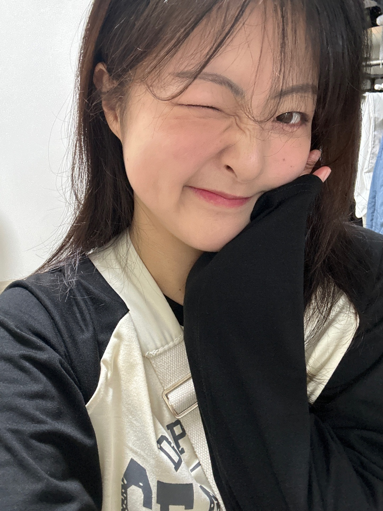
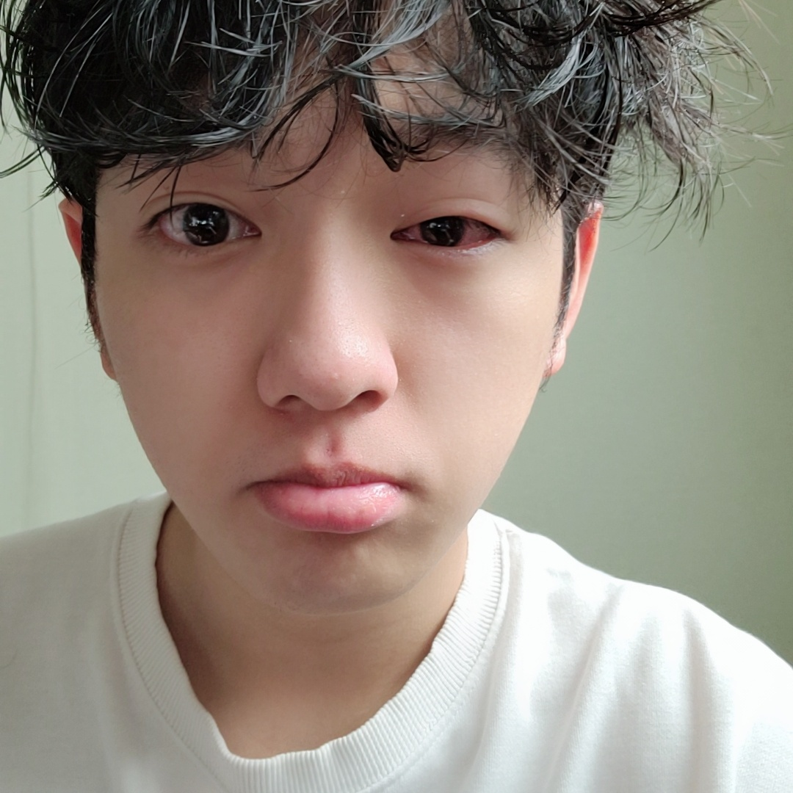

중요할 때 서로 도움이 됐던 순간들
토익 시험

가시밭길이였던 토익 시험
하지만 한결같이 응원 해주는 든든한 아군 심해솔 덕분에
흔들리지 않고 자신 있게 시험을 잘 치를 수 있었따
내가 없었다면 이렇게 슬퍼 했을 것

처음 따라간 시험

만난지 얼마 안됐을 때 따라갔던 자격증 시험
열렬한 응원 덕분에 완벽하게 시험을 치르고 왔었다
당시 응원하던 심해솔

국가 대표 선발전 전날
귀엽게 응원 해주던 주영이
함께 전주 시합 간 날
덕분에 외롭지 않았던 시합
과거의 나
자기가 없을 때는 이게 일상
지금의 나
자기 덕분에 사람이 됐음